<!DOCTYPE html>
<html lang="en">
<head>
  <meta charset="UTF-8">
  <meta name="viewport" content="width=device-width, initial-scale=1.0">
 
</script>
</body>
</html>
  <meta charset="UTF-8" />
  <meta name="viewport" content="width=device-width, initial-scale=1.0" />
  <meta name="description" content="Biography of Mr. Nurul Islam Mridha, a respected leader and social activist from Chandpur, BNP leader, known for honesty, courage, and service." />
  <meta name="keywords" content="Nurul Islam Mridha, Chandpur BNP, BNP Leader, Nurul Islam biography, social organizer, Chandpur politics" />
  <meta name="author" content="Abu Shayam" />
  <meta name="google-site-verification" content="YOUR_VERIFICATION_CODE_HERE" />
  <title>Mr. Nurul Islam Mridha | Chandpur BNP Leader</title>
  <link rel="stylesheet"href="https://fonts.googleapis.com/css2?family=Roboto&display=swap">
  <style>
    body {
      font-family: 'Roboto', sans-serif;
      background-color: #f5f9fc;
      margin: 0;
      padding: 0;
      color: #333;
    }
    .container {
      max-width: 960px;
      margin: auto;
      background: #fff;
      padding: 30px;
      box-shadow: 0 5px 20px rgba(0, 0, 0, 0.08);
    }
    header {
      text-align: center;
      margin-bottom: 30px;
    }
    header img {
      width: 180px;
      border-radius: 10px;
      margin-bottom: 15px;
    }
    h1 {
      color: #005288;
      margin: 0;
    }
    h2 {
      color: #2b3e50;
      border-bottom: 1px solid #ccc;
      padding-bottom: 6px;
      margin-top: 40px;
    }
    p {
      line-height: 1.8;
      font-size: 16px;
    }
    footer {
      margin-top: 50px;
      text-align: center;
      font-size: 14px;
      color: #777;
    }
  nav {
      text-align: right;
      font-size: 14px;
      margin-bottom: 10px;
    }
    nav a {
      color: #005288;
      text-decoration: none;
      margin-left: 10px;
    }
 </style>
</head>
<body>
  <div class="container">
    <nav>
      <a href="index.html">বাংলা সংস্করণ</a>
    </nav>
    <header>
      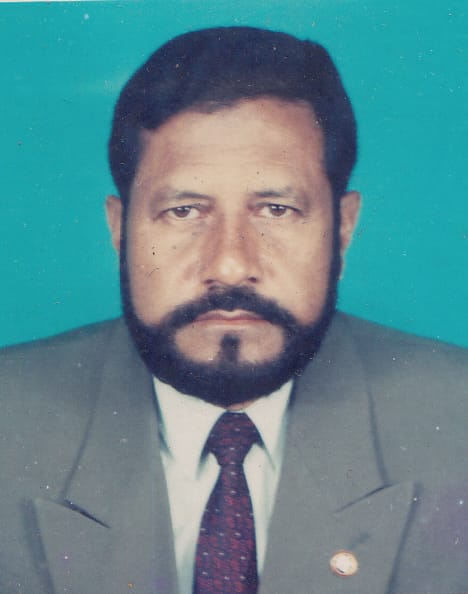
      <h1>Mr. Nurul Islam Mridha</h1>
      <p><strong>(1943–Present)</strong><br>An Honest Visionary, Social Thinker, and Fearless Organizer</p>
    </header>

    <h2> Early Life & Family Background</h2>
    <p>Mr. Nurul Islam Mridha was born on June 2, 1943, in the historic Muslim family of Paschim Laruya village, located in Faridganj Upazila of Chandpur District. His father, Alhaj Abdul Gani Mridha, was a renowned businessman and a respected social worker in Faridganj. Known for his integrity, generosity, and philanthropic spirit, he was a symbol of trust among the local community.During their visits to the region, the distinguished spiritual leaders (Pirs) from Jaunpur, a well-known center of Islamic scholarship in the subcontinent, would often choose the courtyard of the Mridha family home as their place of rest. This tradition continues to be honored with deep respect to this day.Growing up in such a spiritually enriched and humanitarian environment, Nurul Islam Mridha absorbed values of honesty, responsibility, and social service from a very young age. These principles shaped him into a widely respected organizer and visionary social thinker.</p>

    <h2> Education</h2>
    <p>Mr. Mridha began his education at Rampur Alia Madrasa, where he pursued religious studies with dedication. Alongside this, he showed keen interest in modern education. In 1972, he successfully completed his SSC (Secondary School Certificate) from Rampur High School.</p>

    <h2> Professional Life</h2>
    <p>His professional journey began during the pre-independence period by assisting his father in their family business. After the independence of Bangladesh, he settled permanently in Chandpur town and gradually established himself firmly in the spheres of society and politics.</p>

 <h2> Political Career</h2>
 <p>Mr. Mridha played a foundational role in politics as the founding convener of Chandpur Thana for Jagodal, a political party formed by the valiant freedom fighter and late President Ziaur Rahman. He was also actively involved when Jagodal evolved into the Bangladesh Nationalist Party (BNP), contributing significantly to its growth. Throughout his political career, he held several key positions, including:
•	Convener, Thana BNP
•	Treasurer, District BNP
•	President, City BNP
•	Vice-President, District BNP
•	Currently: Member, Advisory Council, District BNP
•	His bold leadership during the anti-autocracy movement of 1990 and his committed efforts toward preserving communal harmony earned him widespread admiration and respect.</p>

    <h2> Social Contributions</h2>
    <p>Beyond politics, Mr. Mridha was deeply committed to social service. He served in many esteemed capacities, such as:
•	1986: President, Chandpur Apex Club
•	1989: Governor, Apex District-3
He is also a life member of:
•	Chandpur Red Crescent Society
•	Chandpur Rifle Club
•	And served as President of the Chandpur Mohammedan Club.</p>

    <h2> Business and Enterprise</h2>
    <p>In the commercial sector of Chandpur, Mr. Nurul Islam Mridha is also a respected and well-known name. His established venture, “Nur Mansion,” is now recognized as one of the busiest commercial hubs in the town.</p>

    <h2> Family Life</h2>
    <p>A successful father and a peaceful family man, Mr. Mridha is the proud parent of three daughters and three sons. He is admired for his balanced and exemplary role in family life.</p>

    <h2> Conclusion</h2>
    <p>The life of Mr. Nurul Islam Mridha is not merely the story of an individual—it reflects an era in Chandpur’s history. His honesty, dedication, and relentless service continue to inspire many to this day. Whether in politics or social work, he has always stood out as a selfless, courageous, and principled leader.</p>
 <title>সামাজিক ও রাজনৈতিক কার্যক্রম</title>
  <style>
    body {
      font-family: Arial, sans-serif;
      background: #f4f8fb;
      text-align: center;
      margin: 0;
      padding: 0;
    }
    .slideshow-container {
      max-width: 700px;
      position: relative;
      margin: auto;
    }
    .mySlides {
      display: none;
    }
    img {
      width: 70%;
      border-radius: 10px;
    }
    /* Next & previous buttons */
    .prev, .next {
      cursor: pointer;
      position: absolute;
      top: 50%;
      width: auto;
      padding: 10px;
      margin-top: -22px;
      color: white;
      font-weight: bold;
      font-size: 22px;
      transition: 0.3s;
      border-radius: 0 3px 3px 0;
      user-select: none;
    }
    .next {
      right: 0;
      border-radius: 3px 0 0 3px;
    }
    .prev:hover, .next:hover {
      background-color: rgba(0,0,0,0.6);
    }
    /* Dots */
    .dot-container {
      text-align: center;
      margin-top: 10px;
    }
    .dot {
      height: 12px;
      width: 12px;
      margin: 0 3px;
      background-color: #bbb;
      border-radius: 50%;
      display: inline-block;
      cursor: pointer;
      transition: background-color 0.6s ease;
    }
    .active {
      background-color: #005288;
    }
  </style>
</head>
<body>

<h2> সামাজিক ও রাজনৈতিক কার্যক্রম (Slideshow)</h2>

<div class="slideshow-container">

  <div class="mySlides">
    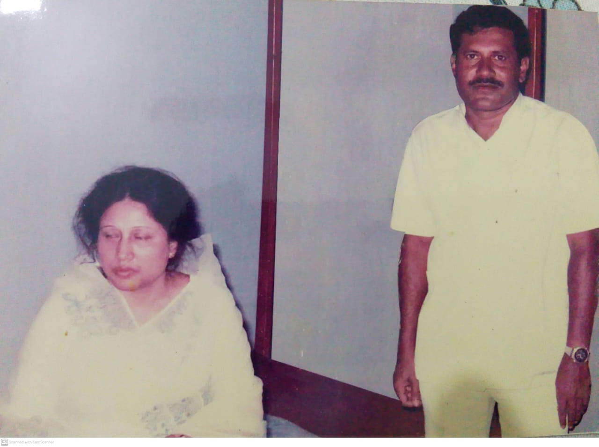
  </div>

  <div class="mySlides">
    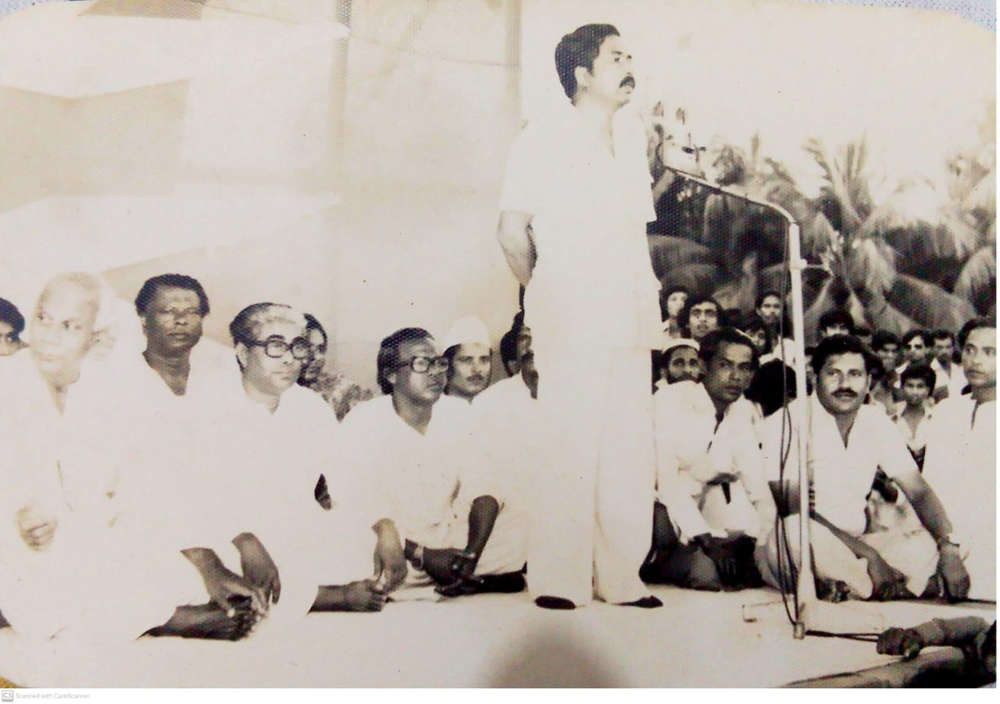
  </div>

  <div class="mySlides">
    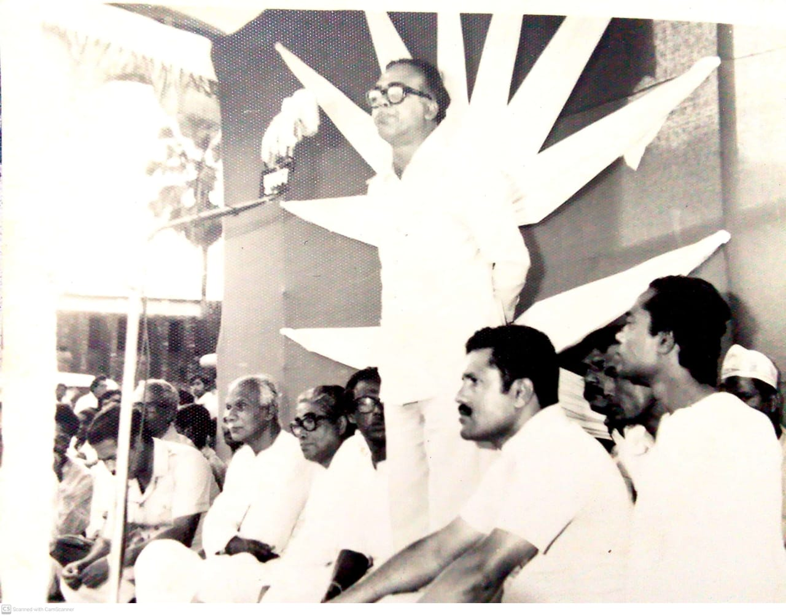
  </div>

  <div class="mySlides">
    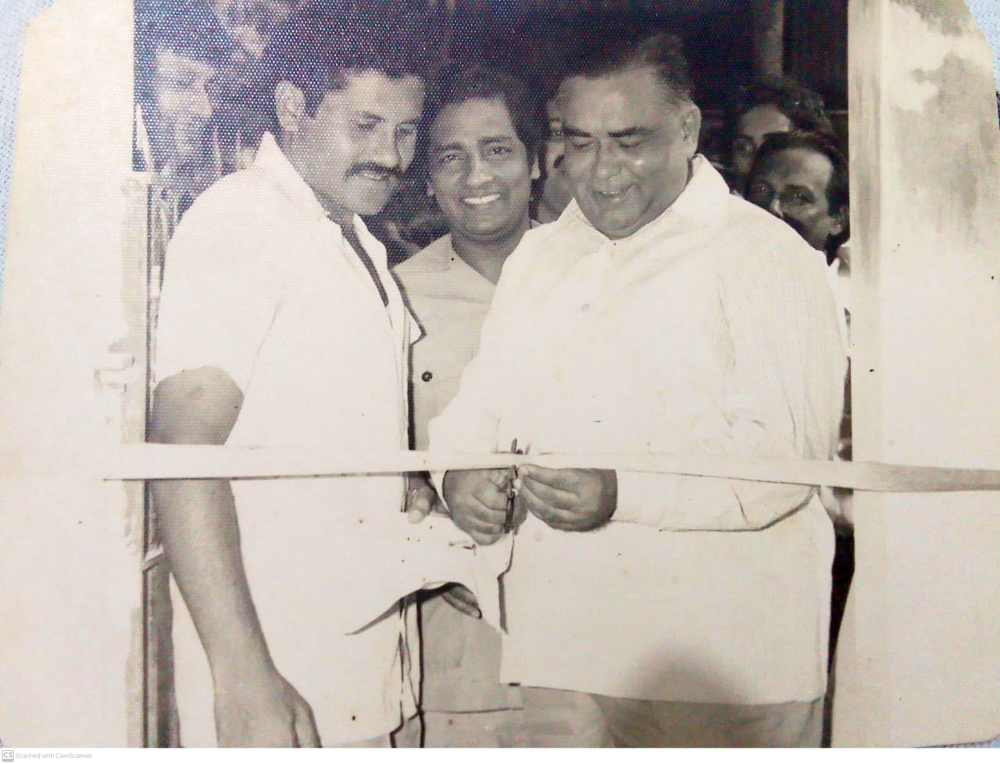
  </div>

  <div class="mySlides">
    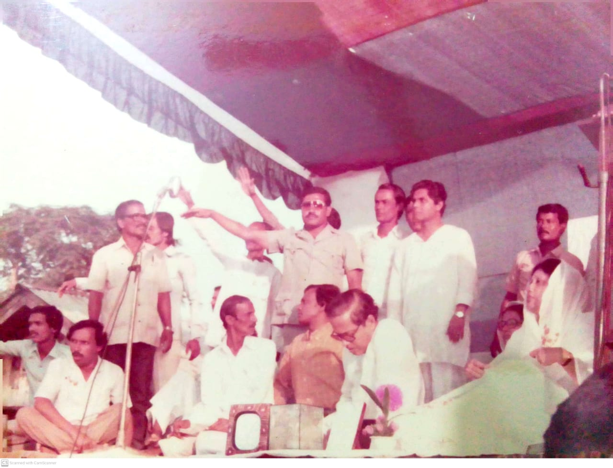
  </div>

  <div class="mySlides">
    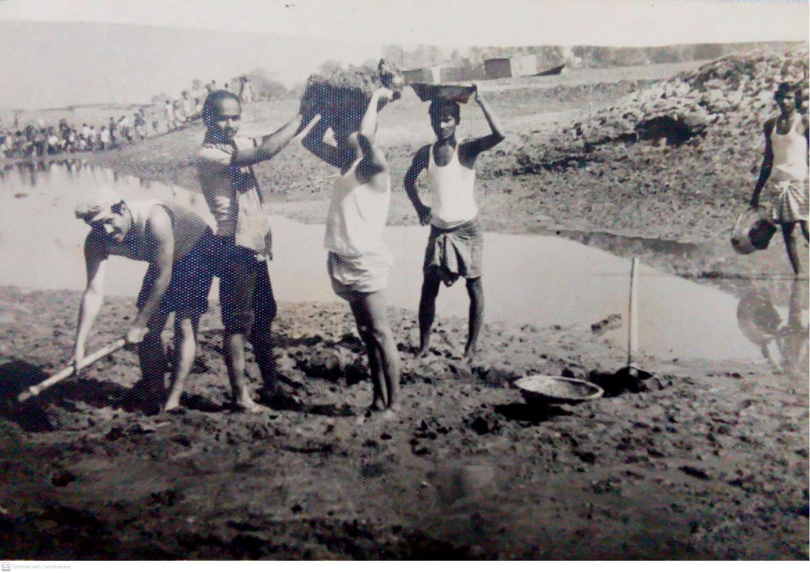
  </div>

  <div class="mySlides">
    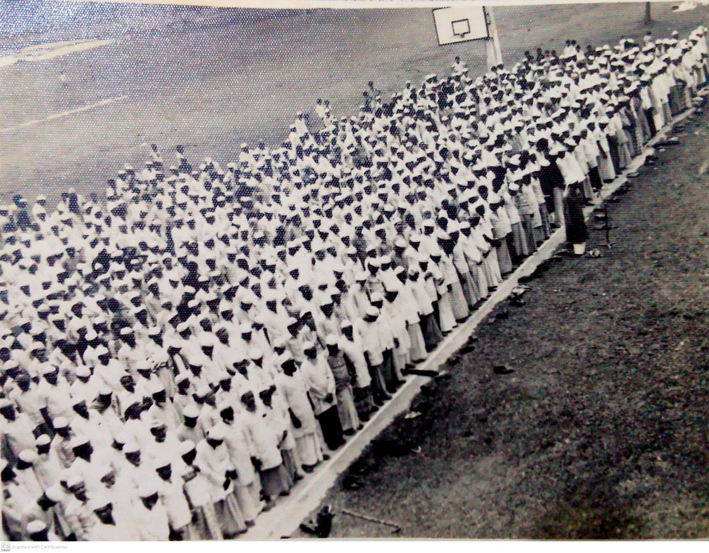
  </div>

  <div class="mySlides">
    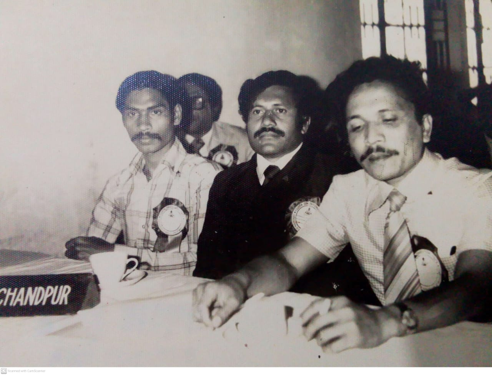
  </div>

  <div class="mySlides">
    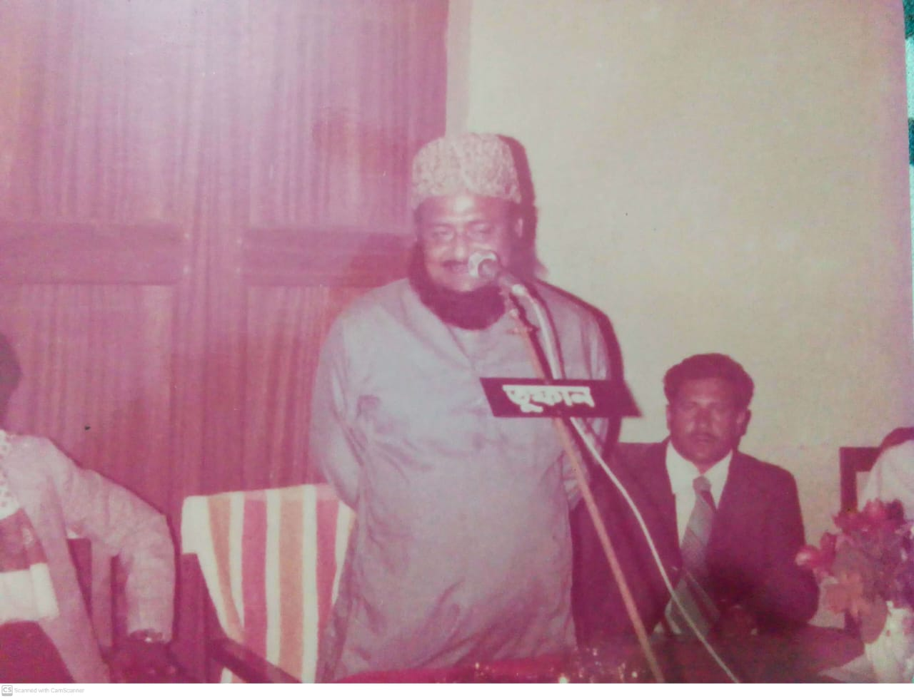">
  </div>

  <div class="mySlides">
    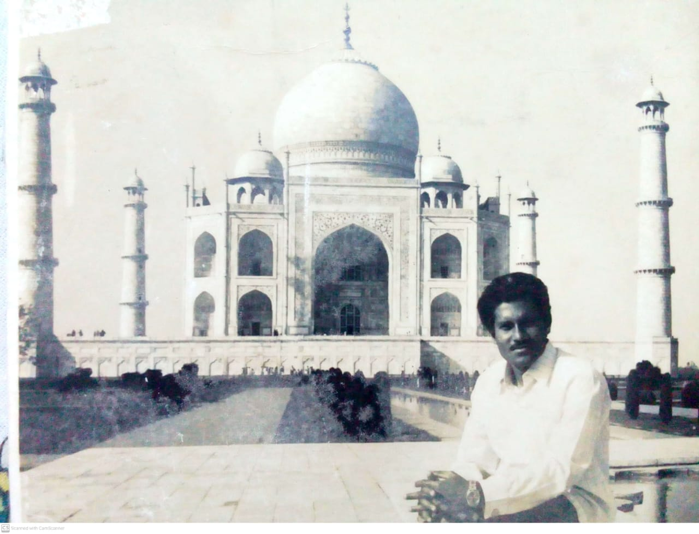
  </div>

  <!-- Next and previous buttons -->
  <a class="prev" onclick="plusSlides(-1)">❮</a>
  <a class="next" onclick="plusSlides(1)">❯</a>

</div>

<div class="dot-container">
  <span class="dot" onclick="currentSlide(1)"></span>
  <span class="dot" onclick="currentSlide(2)"></span>
  <span class="dot" onclick="currentSlide(3)"></span>
  <span class="dot" onclick="currentSlide(4)"></span>
  <span class="dot" onclick="currentSlide(5)"></span>
  <span class="dot" onclick="currentSlide(6)"></span>
  <span class="dot" onclick="currentSlide(7)"></span>
  <span class="dot" onclick="currentSlide(8)"></span>
  <span class="dot" onclick="currentSlide(9)"></span>
  <span class="dot" onclick="currentSlide(10)"></span>
</div>
<script>
let slideIndex = 1;
showSlides(slideIndex);
function plusSlides(n) {
  showSlides(slideIndex += n);
}
function currentSlide(n) {
  showSlides(slideIndex = n);
}
function showSlides(n) {
  let i;
  let slides = document.getElementsByClassName("mySlides");
  let dots = document.getElementsByClassName("dot");
  if (n > slides.length) {slideIndex = 1}
  if (n < 1) {slideIndex = slides.length}
  for (i = 0; i < slides.length; i++) {
      slides[i].style.display = "none";
  }
  for (i = 0; i < dots.length; i++) {
      dots[i].className = dots[i].className.replace(" active", "");
  }
  slides[slideIndex-1].style.display = "block";
  dots[slideIndex-1].className += " active";
}
// Auto slideshow
setInterval(() => { plusSlides(1); }, 4000); // প্রতি ৪ সেকেন্ডে পরিবর্তন
    <footer>
      &copy; 2025 Nurul Islam Mridha Memorial Site 
    </footer>
  </div>
</body>
</html>


